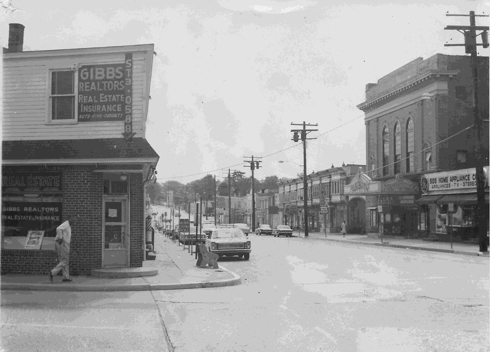

STILLWATER — The 1980 federal census put the population of this village at 62. Ten years earlier it had been 811. The fall — better than ninety percent in a decade — was the steepest of any incorporated place in the state, and nearly all of it happened inside one twelve-month stretch that began, as close as anyone here will say, in the autumn of 1977.
There is no agreed account of what happened. The Halvorsen mine had closed in 1971, and that loss was real and well recorded: severance notices, a supper at the Marne Hotel, letters back from families resettled in Duluth and the Cities. What came six years later left no paper of that kind. People did not pack and say goodbye. By the reckoning of those who stayed, the town simply woke a little smaller each week through that year and did not remark on it.
“Eleven years I sat that desk,” said Harold Mesick, 71, the resident sheriff’s deputy for Stillwater until 1979. “In the whole of that year I did not take one missing-person report. Not one. Nobody came in to say a name. You cannot file on a person if there’s nobody left who remembers to miss them.”
Harmon County’s own records for the period are incomplete. County Clerk Carl Wisz said the 1978 property-tax rolls carry nineteen parcels paid current by owners the office has never matched to a resident, living or dead. “The money comes in. It still does, some years. We send the notices to the addresses and once in a while somebody pays them. I have a drawer of receipts signed in hands I cannot read.”
At First Lutheran, the Rev. Thomas Ault — who by the late 1980s drove in from Two Harbors to hold a service every second Sunday — keeps the membership book from those years on the vestry shelf. “Two hundred and forty communicants in 1976,” he said, turning to the page. “Two hundred and forty in 1979. Not one name crossed out. There was no one to cross them out, and no one to say they should be.”
The Clarion’s own file has a hole in it. Frank Deller, 79, who edited and largely set this paper from 1954 to 1983, went back some years ago to bind the run for 1977 and 1978. “Between about the middle of October and the following September there is nothing in the morgue but the front-page flags,” he said. “Eleven months of issues. I set most of those pages with my own hands and I could not tell you now what was on them. The type went back in the case and that was that.”
What residents describe, when they will describe it, is less grief than a gap. Verna Kohl, 68, who has run the laundromat on Lake Street since 1961 and is one of the last people operating a business in town, put it this way: “I know there were more of us. I cannot give you the faces. I have sat with the old class pictures and tried. You count the shadows on the ground in those photographs and there are more of us standing there than there are faces to go around.”
The lake has settled nothing. Divers hired by the county in 1981 to search the deep hole off Beaufort Point brought up two rowboats and a 1964 sedan and nothing else. “People want to say they all walked into the water,” Mesick said. “The lake has never given a body back, not in my time nor before it. But eight hundred people do not walk into a lake and leave the cars in the drive.”
The state demographer’s office, asked about the Stillwater figure, described it in a 1982 memo as “an apparent reporting error under review.” The review was never published. Two calls to the office for this article were not returned.
Stillwater still has a township board, which meets the second Tuesday of the month at the Osgood building, quorum permitting, and a post office open four hours a day. The Bijou has been dark since 1977. The three storefronts still tenanted on the north side of Lake Street are the laundromat, the post office, and Pyle’s.
“You keep waiting for somebody to come and ask about it properly,” Verna Kohl said. “Nobody ever has. After a while you understand nobody is going to. And then some days you cannot remember what it was you meant to tell them.”
See STILLWATER, Page 6A